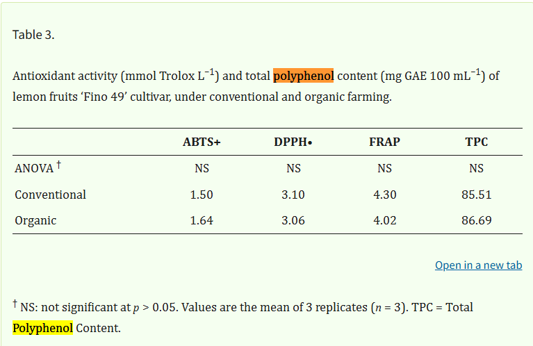

He trovat diferens articles cientifics que estudien el meu tema i els trbareu a continucació en format AP7. AP7 és una forma de escriure un article cientific
Artcle 1:
En la figura 1 podem veure que no hi ha diferències estadísticament entre el nivell de polyphenol entre una llimona cultivada convencionalment o un cultiu ecològic. Observem que els resultats són poc variables entre 85.51g de polyphenol en el convencional i 86.69g de polyphenol en el organic respecte a 1 kg de llimones
A continuació veus una imatge de ChatGPT que indica que si a trobat el que li he demanat, encara que al principi diu que sí hi ha diferencia, però després a la conclusió diu que no hi ha diferencia


